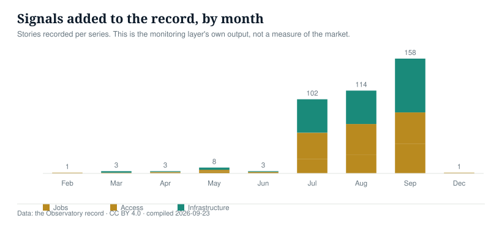

One definition per metric, one source per row, statuses that are never mixed and gaps stated as numbers. This page is the contract behind every figure.
Completeness is not claimed. Rigour is.Artificial intelligence is reshaping economic life, and the conversation about it has been largely about governing the technology. That work matters and it has reached Africa: the African AI Governance Index covers 55 countries, the Africa AI Readiness Index ranks countries, and the African Observatory on Responsible AI studies governance and ethics. Governance is one component. The economic record is the other, and it is thinner.
The impact is already visible in prices and in work. Freelance writing work on Upwork fell 32% year on year in 2025 as clients shifted work to AI tools. AI demand is driving memory prices up, which in turn makes smartphones more expensive, so a phone bought in Lagos or Nairobi now carries part of the cost of the AI buildout. African governments are committing to the promise: Nigeria's NATEP programme targets 1 million digital jobs, Ghana has committed to 100,000 business process outsourcing jobs, and Rwanda is positioning itself as an ICT exporter, with the Cassava Technologies and NVIDIA partnership investing US$700 million around 12,000 processing chips.
The ambitions are real. The record of whether they are being met is not. That is the gap this record exists to close, and closing it means counting rather than asserting.
Every register in this record belongs to one of three dimensions, and each is stated the same way on every page.
How AI is changing employment, digital work and economic opportunity.
Whether individuals and businesses can afford and reach AI technologies.
Whether Africa has the computing, connectivity, electricity and data-centre capacity required to participate.
This record is built for researchers, policymakers, journalists and development institutions: people who need a number they can check rather than a headline they have to trust.
Three different quantities measure how exposed African work is to AI. They are not interchangeable, they do not share an axis, and a country can rank differently on each. This record publishes all three and states which is which.
A country's rank on one of these is not evidence about its rank on another. The index is not a percentage of jobs, the task share is not a share of employment, and nothing here sums them. The four countries absent from the index (Nigeria, South Africa, Morocco and Senegal) are covered by the task share, and the page says so rather than leaving a hole.
Produced by the validator that gates every publish. If it fails, the record files still commit but the site is deliberately left alone.
| Register | Rows | Headline eligible | Quarantined | No archive |
|---|---|---|---|---|
| affordability.csv | 130 | 12 | 118 | 0 |
| availability-register.csv | 60 | 58 | 2 | 0 |
| component-costs | 1 | 1 | 0 | 0 |
| device-policy | 1 | 0 | 1 | 0 |
| device-prices | 6 | 0 | 6 | 0 |
| device-shipments | 5 | 0 | 5 | 1 |
| free-tier-register.csv | 29 | 25 | 4 | 4 |
| fx-decomposition.csv | 130 | 12 | 118 | 0 |
| infra-capacity.csv | 4 | 2 | 2 | 0 |
| infrastructure | 22 | 0 | 22 | 5 |
| jobs-atlas-exposure.csv | 36 | 0 | 36 | 0 |
| jobs-exposure.csv | 33 | 0 | 33 | 0 |
| model-price-events | 5 | 2 | 3 | 1 |
| model-prices | 13 | 3 | 10 | 0 |
| subscription-register.csv | 290 | 250 | 40 | 40 |
A quarantined row is not hidden. It is published with its source and its status, and it is excluded from headline figures because its evidence does not meet the rule for the row type. The rules are on this page; the counts are above.
Stories recorded per series. This is the monitoring layer's own output, not a measure of the market

Added daily · counts from the live record
| Month 2026 | Jobs | Access | Infrastructure | Total |
|---|---|---|---|---|
| May | 3 | 2 | 3 | 8 |
| Jun | 0 | 2 | 1 | 3 |
| Jul | 20 | 36 | 46 | 102 |
| Aug | 26 | 42 | 46 | 114 |
| Sep | 47 | 50 | 87 | 184 |
A single place where AI's economic effect on Africa is recorded with its source, its status and the date it last moved. Three series, each with a defined unit: infrastructure, access and jobs. Every row can be traced to a named source, and every chart can be downloaded as a file and cited.
A row is a fact, not a story: a facility with a capacity figure and a status, a model with a price and a capability score, a device market with a measured change. Headlines are recorded separately as signals and never mixed into the registers.
Completeness cannot be guaranteed on a continent where much capacity is privately built and undisclosed. What is guaranteed is a published definition per metric, a source per row, statuses that are never mixed, gaps stated as numbers, and a null that stays null rather than becoming an estimate.
Five treatments, applied identically on every surface: chip, table row and chart mark. Status is never carried by colour alone; every chip prints its label, and chart marks pair colour with a fill pattern.
Printing in greyscale: measured is solid, announced is outlined at reduced weight, forecast is dashed with no fill, proposal is hatched, derived carries a function glyph.
Every capability score in this record comes from one third party, the Artificial Analysis Intelligence Index. That index was restated in September 2026, which made previously published scores non-comparable with new ones. This record responded by restating every priced model to the current basis, retaining the prior value per row and logging each change in capability-restatement-log.json.
What happens if it changes again: the restatement process runs again, prior values are retained again, and no two bases are ever plotted on one axis. What happens if it disappears: the capability axis becomes undrawable, and the register falls back to price alone, with the loss stated here rather than a substitute score being invented. No second independent capability reference is carried yet; that is a known gap.
A row is an evidence status and a temporal status, never one blended label. The cross-tab below is every combination actually present in this release, and whether that combination may enter a headline series.
| Evidence status | Temporal status | Rows | Headline |
|---|---|---|---|
| trade reporting | measured | 17 | never headlines |
| unclear | measured | 8 | never headlines |
| unclear | announced | 7 | never headlines |
| industry body | measured | 6 | may headline |
| trade reporting | announced | 4 | never headlines |
| industry body | forecast | 1 | never headlines |
| industry body | projection | 1 | never headlines |
| official | measured | 1 | may headline |
| trade reporting | forecast | 1 | never headlines |
| trade reporting | projection | 1 | never headlines |
| trade reporting | proposal | 1 | never headlines |
Every row carries the tier of its evidence. Where a trade report is the only source for a field, the field is marked unverified and excluded from headline series.
| Tier | Examples | Used for |
|---|---|---|
| Primary filing | Planning registers, grid connection records, regulator notices | Capacity, consent, energisation |
| Company filing | Results presentations, operator press releases | Capacity, commissioning dates, prices |
| Government communication | Ministry statements, national AI strategy documents | Targets, programmes, sovereign projects |
| Industry body | Association reports and market trackers | Cross-checks against our own count |
| Trade reporting | Specialist and general press | Signals, and fields marked unverified |
What the record holds, against what is published about the same universe.
| Series | Rows | What it misses |
|---|---|---|
| Infrastructure | 22 | 16 rows without a published capacity; privately built facilities that are never announced; competing estimates put the continent at 223–230 facilities and 360 MW active |
| Access, models | 13 | African providers and locally hosted inference are not yet priced; launch-era capability scores are on an earlier scale |
| Access, devices | 13 | No country-level entry-tier device price; no index of our own construction |
| Jobs | 99 | Daily signals remain unstructured; separate country-level exposure measures are listed below with their coverage and gaps |
The country profiles cover all 54 African countries. “No information” means no country-level value or record appears in the stated dataset in this release; it is not zero and is not a claim that no source exists anywhere. Country totals below are computed from the published registers and the separate context snapshot.
| Measure | With information | No information | Scope and limitation |
|---|---|---|---|
| Jobs · task exposure | 36 of 54 | 18 | Published task-country summary; no country values are inferred. |
| Jobs · employment-weighted exposure | 33 of 54 | 21 | Separate model and denominator from the task-share measure. |
| Access · signup and payment evidence sample | 10 of 54 | 44 | Observed signup/payment sample; it does not define provider-wide supported regions. |
| Access · AI product support lists | 54 of 54 | 0 | Any one listed product-country pair; geographic listing only. |
| Access · Anthropic — Anthropic commercial API | 54 of 54 | 0 | Official supported-region list; not a test of signup, features, local payment, price, or uptime. |
| Access · Anthropic — Claude.ai web and mobile | 54 of 54 | 0 | Official supported-region list; not a test of signup, features, local payment, price, or uptime. |
| Access · Google — Gemini web app | 54 of 54 | 0 | Official supported-region list; not a test of signup, features, local payment, price, or uptime. |
| Access · Google — Google AI Studio and Gemini API | 54 of 54 | 0 | Official supported-region list; not a test of signup, features, local payment, price, or uptime. |
| Access · OpenAI — ChatGPT web and mobile | 54 of 54 | 0 | Official supported-region list; not a test of signup, features, local payment, price, or uptime. |
| Access · OpenAI — OpenAI API | 54 of 54 | 0 | Official supported-region list; not a test of signup, features, local payment, price, or uptime. |
| Access · AI workload affordability | 8 of 54 | 46 | No wage figure is estimated where the required input is absent. |
| Infrastructure · named projects | 8 of 54 | 46 | Named project records are not a complete facility census; shared and unallocated rows are not assigned to countries. |
| Infrastructure · country capacity values | 4 of 54 | 50 | A project without a published country-level capacity stays blank. |
| Context · Access to electricity (% of population) | 54 of 54 | 0 | Latest available annual observations; years 2024–2024. Not an AI-specific measure. |
| Context · Firms experiencing electrical outages (% of firms) | 52 of 54 | 2 | Latest available annual observations; years 2009–2025. Not an AI-specific measure. |
| Context · Value lost due to electrical outages (% of sales for affected firms) | 52 of 54 | 2 | Latest available annual observations; years 2009–2025. Not an AI-specific measure. |
| Context · Mobile cellular subscriptions (per 100 people) | 54 of 54 | 0 | Latest available annual observations; years 2022–2024. Not an AI-specific measure. |
| Context · Fixed broadband subscriptions (per 100 people) | 54 of 54 | 0 | Latest available annual observations; years 2021–2024. Not an AI-specific measure. |
| Context · Individuals using the Internet (% of population) | 54 of 54 | 0 | Latest available annual observations; years 2017–2024. Not an AI-specific measure. |
The Global Automation Atlas replication data publish country summaries for 36 African countries. A 2026 ILO working paper models a broader country sample, but does not publish a reusable table of country-level estimates. We therefore keep the two adopted measures separate and do not digitize chart points or substitute estimates from another method. Atlas data · ILO Working Paper 166.
The African Data Centres Association's 2026 report estimates 220–230 facilities across 38 countries and gives continental active, under-construction and planned capacity. Those continent-wide values cannot be assigned to a specific country's profile without country-level facility and capacity evidence. This register therefore shows named projects and numeric MW only where a source identifies them; an unlisted country is not treated as having zero capacity. Read the ADCA 2026 report.
Internet use and broadband subscriptions describe general connectivity; household electricity access does not establish reliable power for a data centre. Firm outage measures are survey observations and their years vary. The values are kept outside the AI-specific indicator registry and cannot enter its headline figures. The CSV records each observation year, country-specific API query, originating dataset, and retrieval date. The World Bank API's MRNEV option returns the most recent non-empty observation; all values were retrieved from the API snapshot last updated 2026-07-13. Download the country context snapshot · World Bank API query guide · World Bank licensing.
workload_cost_usd / (gni_per_capita_atlas_usd / 12) x 100, where the workload is the record's frozen standard unit: 1,000,000 input tokens and 250,000 output tokens. The monthly basket is 20 x that unit, a defined unit standing in for roughly one moderate session per working day. It is an assumption, versioned, and not an estimate of real behaviour.
workload_cost_local / statutory_hourly_minimum_wage_local, where the local cost uses the official rate. Minimum wages are held in a hand-maintained table with a source and an effective date per country, because they change by decree and no clean API exists. Where a country has no single national rate, the cell stays null and the reason is recorded.
The income base is GNI per capita on the Atlas method, which smooths exchange rates over years. The minimum-wage calculation uses the spot rate on a stated date. They answer different questions and are never presented as variants of one number.
Where a country has a materially different parallel rate, both are recorded and neither is blended. In Nigeria the two move in the same direction at different speeds, and that gap is itself a finding rather than something to average away.
ln(P_local_t / P_local_0) = ln(P_usd_t / P_usd_0) + ln(FX_t / FX_0). Logs are additive, so the rate-card component and the currency component sum exactly to the total. The base date is 2026-01-15 = 100. The build asserts the identity on every row and fails if it breaks. Where a model has one observation, its rate-card component is zero by absence of evidence, not by evidence of no change, and the row says so.
Invariant: every derived metric must be reproducible from the published CSVs alone. This is that check, rendered from the files rather than typed by hand.
| Step | Value |
|---|---|
| 1. Model | Claude Fable 5.1 (Anthropic), list rate 10.0 in / 50.0 out per million tokens |
| 2. Standard workload | 1,000,000 input + 250,000 output tokens, the record's frozen unit |
| 3. Workload cost | 1 x 10.0 + 0.25 x 50.0 = $22.5 |
| 4. GNI per capita, Atlas method | $1360.0 (2025) |
| 5. Monthly income | $1360.0 / 12 = $113.3333 |
| 6. Single workload as share of monthly income | $22.5 / $113.3333 x 100 = 19.8529% |
| 7. Monthly use basket | 20 x the workload = 397.0588% of monthly income |
| 8. Official rate at base | $22.5 x 1418.7844 NGN/USD = 31922.649 NGN |
| 9. Official rate now | $22.5 x 1330.7027 NGN/USD = 29940.8108 NGN |
| 10. Decomposition | currency -6.40933 log-% + rate card 0.0 log-% = -6.40933 log-% (index 93.7917) |
| 11. Minimum-wage hours | 29940.8108 NGN / 403.92 per hour = 74.1256 hours; the basket is 1482.51 hours |
Every figure above can be reproduced from data/affordability.csv and data/fx-decomposition.csv. Formula versions: A-1.0 and B-1.0.
A model enters the price register if, as at the compile date, it (a) has a list price published by the provider itself or by a named pricing aggregator we can link to, (b) scores at least 35 on the capability index on a stated basis, and (c) is reachable through an API from at least one covered country. The rule is applied mechanically; the excluded table below is the proof.
| Model | Input $/Mtok | Output $/Mtok | Capability | Basis |
|---|---|---|---|---|
| Claude Fable 5.1Anthropic | $10 | $50 | 53.4 | current |
| Claude Opus 5Anthropic | $5 | $25 | 50.8 | current |
| Claude Sonnet 5Anthropic | $2 | $10 | 38.2 | current |
| Claude Fable 5Anthropic | $10 | $50 | 49.6 | current |
| Claude Opus 4.8Anthropic | $5 | $25 | 41.8 | current |
| Claude Opus 4.7Anthropic | $5 | $25 | 40.7 | current |
| GPT-6 AstraOpenAI | $10 | $50 | 52.7 | current |
| GPT-5.6 SolOpenAI | $4 | $20 | 47.0 | current |
| GPT-5.6 TerraOpenAI | $2 | $12 | 42.1 | current |
| GPT-5.6 LunaOpenAI | $0.20 | $1.20 | 37.3 | current |
| Gemini 3.8 FlashGoogle | $0.75 | $3.75 | 40.9 | current |
| Gemini 3.7 FlashGoogle | $0.75 | $3.75 | 39.1 | current |
| Muse Spark 1.3Meta | $1.25 | $4.25 | 48.1 | current |
| Muse Spark 1.2Meta | $1.25 | $4.25 | 39.6 | current |
| Qwen3.8 MaxAlibaba | $2 | $6 | 45.4 | current |
| Qwen3.8 MaxAlibaba | $2 | $6 | 40.2 | current |
| Qwen3.8 2.4T A95BAlibaba | $2 | $6 | 39.9 | current |
| Qwen3.8-Flash-NextAlibaba | $0.15 | $0.47 | 39.8 | current |
| GLM-5.3Z AI | $1.4 | $4.4 | 44.8 | current |
| GLM-5.3-FlashZ AI | $0.15 | $0.5 | 41.8 | current |
| Kimi K3Moonshot AI | $3 | $15 | 43.6 | current |
| Grok 4.6xAI | $2 | $6 | 44.3 | current |
| Grok 4.5xAI | $2 | $6 | 38.8 | current |
| Step 5 PreviewStepFun | $1 | $2.7 | 43.7 | current |
| DeepSeek V4.1 FlashDeepSeek | $0.30 | $1.20 | 39.5 | current |
| DeepSeek V4 Pro 0813DeepSeek | $1.32 | $3.96 | 36.0 | current |
| Agnes 3.0 FlashSapiens AI | $0.05 | $0.15 | 35.5 | current |
| Agnes 2.5 Pro BetaSapiens AI | $0.10 | $0.30 | 35.2 | current |
| Model | Exclusion reason |
|---|---|
| Claude Mythos 5.1Anthropic | no capability score on the index |
The build fails if a trade-reporting row is marked headline eligible, if a source is a bare domain or a session container, if a derived figure is missing its inputs, or if the FX decomposition components do not sum to the total. These are the counts from this release.
| Register | Rows | Headline eligible | Quarantined | Sources to replace | No archive |
|---|---|---|---|---|---|
| model-prices | 13 | 3 | 10 | 0 | 0 |
| model-price-events | 5 | 2 | 3 | 0 | 1 |
| infrastructure | 22 | 0 | 22 | 2 | 5 |
| device-prices | 6 | 0 | 6 | 4 | 0 |
| device-shipments | 5 | 0 | 5 | 2 | 1 |
| device-policy | 1 | 0 | 1 | 0 | 0 |
| component-costs | 1 | 1 | 0 | 0 | 0 |
| affordability.csv | 130 | 12 | 118 | 0 | 0 |
| fx-decomposition.csv | 130 | 12 | 118 | 0 | 0 |
| subscription-register.csv | 290 | 250 | 40 | 10 | 40 |
| free-tier-register.csv | 29 | 25 | 4 | 1 | 4 |
| availability-register.csv | 60 | 58 | 2 | 0 | 0 |
| jobs-exposure.csv | 33 | 0 | 33 | 0 | 0 |
| jobs-atlas-exposure.csv | 36 | 0 | 36 | 0 | 0 |
| infra-capacity.csv | 4 | 2 | 2 | 0 | 0 |
Fields change as projects move. When a value changes, the change is logged with its date and source and the previous value is kept; nothing is silently overwritten. Corrections are published on the page where they apply and recorded in the release history. The record is compiled automatically each morning and released monthly, so a chart cited in September can be reproduced in December.
Charts and data are published under Creative Commons Attribution 4.0. Credit reads: Astrolabe Africa. Commercial licensing for firms, including the underlying data and an API, is separate from this open publication.
{kind=link}
{kind=link}